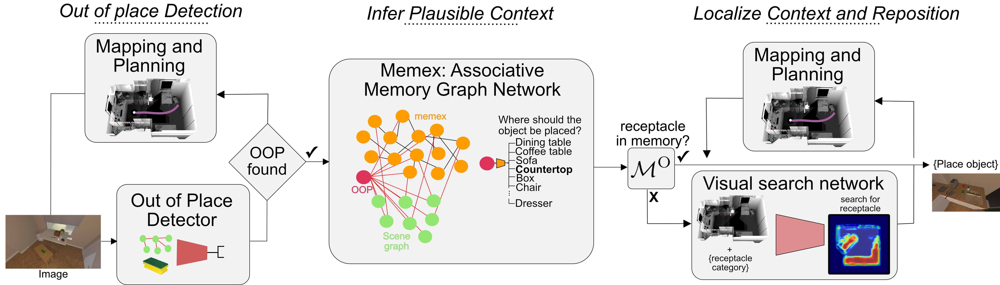

TIDEE: Novel Room Reorganization using Visuo-Semantic Common Sense Priors
Gabriel Sarch Zhaoyuan Fang Adam Harley Paul Schydlo
Michael Tarr Saurabh Gupta Katerina Fragkiadaki
To appear in the proceedings of ECCV, 2022

Abstract
We introduce TIDEE, an embodied agent that tides up a disordered scene based on learned commonsense object placement and room arrangement priors. TIDEE explores a home environment, detects objects that are out of their natural place, infers plausible object contexts for them, localizes such contexts in the current scene, and repositions the objects. Commonsense priors are encoded in three modules: i) visuo-semantic detectors that detect out of place objects, ii) an associative neural graph memory of objects and spatial relations that proposes plausible semantic receptacles for object repositions, and iii) a visual search network that guides the agent’s exploration for efficiently localizing the receptacle-of-interest in the current scene to reposition the object.
We test TIDEE on tidying up disorganized scenes in the AI2THOR simulation environment. TIDEE carries out the task without ever having observed the same room beforehand, relying only on priors learned from a separate set of training houses. We evaluate performance by scoring the resulting room reorganizations using human evaluators. TIDEE out performs ablative versions of the model that do not use one or more of the commonsense priors. Moreover, we show TIDEE can successfully be instructed in natural language to follow specifications for object placement, without any additional training data. Last, on the related room rearrangement benchmark [3], TIDEE outperforms the state-of-the-art by a 7x performance margin.
Overview
How does TIDEE work?

TIDEE can clean up never-before-seen rooms without any instruction or previous exposure of the room and object instances. TIDEE does this by exploring the scene, detecting objects and classifying whether they are in place or out of place. If an object is out of place, TIDEE uses graph inference in its joint external graph memory and scene graph to infer plausible receptacle categories. It then explores the scene guided by a visual search network that suggests where a receptacle category may be found, given the scene spatial semantic map.
Results
TIDEE outperforms ablative versions of the model that do not use one or more of the commonsense priors.
TIDEE generalizes zero-shot to the recent scene rearrangement benchmark, which considers an AI agent tasked with repositioning objects in a scene in order to match the prior configuration of an identical scene. TIDEE outperforms the current state of the art by a significant margin.
We have submitted our model the rearrangement leaderboad here:
content_copy Citation
@article{park2021nerfies,
author = {last name, first name and last name, first name and last name, first name and last name, first name and last name, first name and last name, first name},
title = {TIDEE: Novel Room Reorganization using Visuo-Semantic Common Sense Priors},
journal = {},
year = {},
}